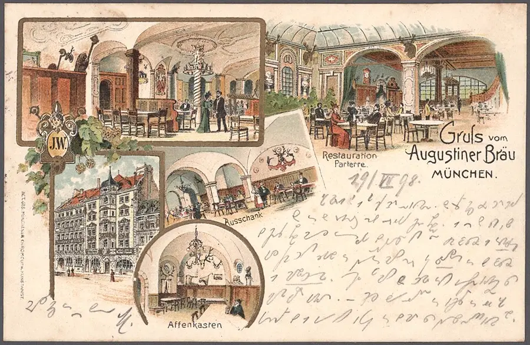
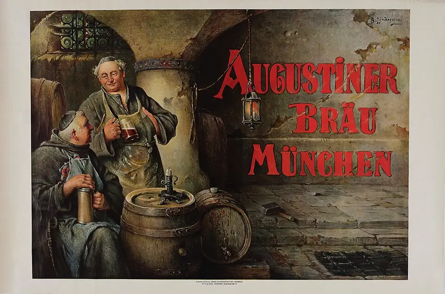

대표 로고대표 브랜드 마크
대표 로고대표 브랜드 마크Augustiner Bräu
Augustiner Bräu는 독일 뮌헨에 본사를 둔 양조장이다. 1328년에 설립되었으며, 뮌헨에서 가장 오래된 독립 양조장이다. 아우구스티노회 수도원에서 비롯되었다.
최종 업데이트
Augustiner Bräu는 어떤 브랜드인가
Augustiner Bräu는 독일 뮌헨의 양조장으로, 1328년에 설립되었다. 뮌헨에서 가장 오래된 독립 양조장이다.
뿌리는 1294년 뮌헨에 도착한 아우구스티노회 수도사들의 수도원이다. 수도사들은 자신들이 마실 맥주를 만들고 세금 없이 판매할 권리를 받았다.
1803년 수도원이 해산된 뒤 양조장은 국가가 운영하다가 민간 소유로 넘어갔고, 1829년 3월 Anton과 Therese Wagner 부부가 양조장과 양조 면허를 인수했다. 이후 양조장은 민간 또는 재단 소유로 이어지고 있다.
Augustiner Bräu는 어떻게 시작되고 성장했나
1294년 아우구스티노회 수도사들이 레겐스부르크에서 와 뮌헨 서쪽 성문 밖 Haberfeld에 자리를 잡았다. 양조장 이름은 1328년에 처음 문헌에 나타나며, 양조는 수도원 설립 직후부터 이루어졌을 가능성이 매우 크다.
수도사들은 1589년 Wilhelm V 공작이 궁정 양조장 Hofbräuhaus를 세울 때까지 261년 동안 Wittelsbach 왕가에 맥주를 공급했다. 1817년 옛 양조장 건물이 낡아 Neuhauser Straße로 옮겼고, 1829년 Wagner 부부가 인수했다.
이후 Joseph Wagner가 경영을 맡아 1883년부터 1890년 사이 Landsberger Straße 31–35에 새 양조장을 지었고, 모든 생산이 점차 그곳으로 옮겨졌다.
Augustiner Bräu의 브랜드 아이덴티티는 무엇인가
수도원 양조장에서 출발해 1328년 기록으로 남은, 뮌헨에서 가장 오래된 독립 양조장이다. 민간·재단 소유로 이어져 온 점이 특징이다.
Augustiner Bräu의 대표 제품과 서비스는 무엇인가
양조 사업이 중심이며, 생산은 Landsberger Straße 31–35의 양조장으로 옮겨졌다. Neuhauser Straße의 옛 양조장 자리는 Augustiner Stammhaus라는 레스토랑이 되었다.
1862년 추가된 Arnulfstraße 52의 저장고 부지에는 Augustiner-Keller와 Beer Garden이 있다. 수도원 시절에도 양조장 부설 선술집이 있었으며, 1791년 Elector Karl Theodor는 이를 세속적인 술집으로 운영한다며 수도사들을 질책했다.
1887년에는 주교 지팡이가 들어간 "JW" 상표가 등록되었다.
Augustiner Bräu는 지금 어떤 상태인가
1829년 이후 양조장은 민간 또는 재단 소유를 유지해 왔다. 뮌헨에서 가장 오래된 독립 양조장이라는 위치를 이어 가고 있다.
Neuhauser Straße의 옛 양조장은 지금 Augustiner Stammhaus라는 레스토랑이고, Arnulfstraße 52는 현재 Augustiner-Keller와 Beer Garden의 부지이다. 옛 수도원 건물은 지금도 뮌헨 경찰 본부 사무실로 쓰인다.
Augustiner Bräu 로고는 어떻게 변해왔나
대표 로고대표 브랜드 마크사진으로 보는 Augustiner Bräu의 역사


자주 묻는 질문
Augustiner Bräu는 어느 나라 브랜드인가요?
Augustiner Bräu는 독일의 식음료 브랜드입니다.
Augustiner Bräu의 브랜드 아이덴티티는 무엇인가요?
수도원 양조장에서 출발해 1328년 기록으로 남은, 뮌헨에서 가장 오래된 독립 양조장이다.
Augustiner Bräu의 대표 제품은 무엇인가요?
양조 사업이 중심이며, 생산은 Landsberger Straße 31–35의 양조장으로 옮겨졌다.
Augustiner Bräu는 어느 기업이 소유하고 있나요?
1829년 이후 양조장은 민간 또는 재단 소유를 유지해 왔다.
Augustiner Bräu의 본사는 어디에 있나요?
Augustiner Bräu의 본사는 뮌헨에 있습니다(위키데이터 기준).
Augustiner Bräu의 공식 웹사이트는 어디인가요?
Augustiner Bräu의 공식 웹사이트는 http://www.augustiner-braeu.de 입니다.
출처와 검증
Augustiner Bräu 관련 참고: 공식 웹사이트 · 위키데이터 Q153546 · 영어 위키백과. 브랜드명은 한글과 원어를 함께 표기하되 데이터에 없는 표기는 만들지 않습니다. 기원 국가·설립연도는 검수된 정의문에서 확인된 값을 우선하고, 없을 때만 공식 웹사이트 URL이 일치하는 위키데이터 개체의 값을 씁니다. 위키데이터 값은 2026-11-08 기준입니다.